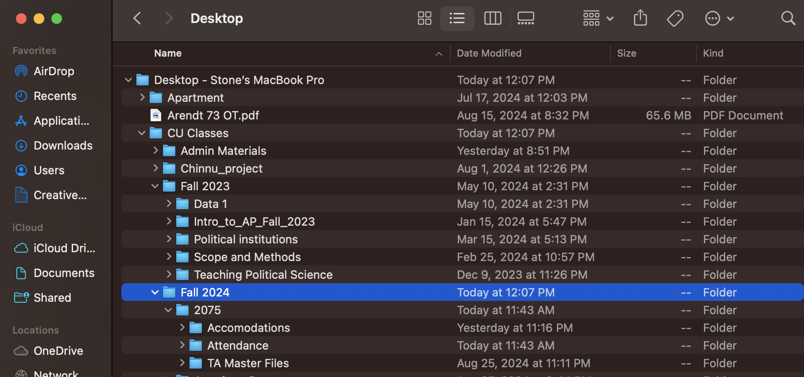

![]()
x <- "Hello World"
# anything I write after the "#" will not be executed
print(x) # this code will tell R to print the object x. [1] "Hello World"This page is my own personal recitation website. I will post both course material and anything we go over in recitation. This is simply a central hub that you can use to help you throughout the semester.
This does not replace the lecture, canvas, or your notes.
In previous years, I have used slide shows. This website is an effort to have a more organized and central workflow that is more accessible.
I teach the 017 and 018 recitation. Make sure you are in the right section!
Section 17 meets on Th 10:10am-11:01am Bruce Curtis Bldg E158
Section 18 meets on Th 1:25pm-2:15pm Clare Small Arts and Sciences 104
Pollock, Philip H. and Barry C. Edwards. 2020. The Essentials of Political Analysis. 6th Edition. CQ Press. (EPA)
Pollock, Philip H. and Barry C. Edwards. 2023. An R Companion to Political Analysis. 3rd Edition. CQ Press. (RCPA)
This class requires the use of a computer. Not an iPad! You are expected to bring it to lecture and recitation regularly.
If you do not have a computer, the library should have some available for you to rent.
Much of this class revolves around the statistical software known as “R”. R is free and open source. It is widely used in academia and industry. We will discuss how to install R soon.
The only way to reach me is by email. I try my best to be as responsive as possible. You may email me at any time of the day but please understand it may take up to 48 hours for me to respond.
Email: stone.neilon@colorado.edu
My office hours will occur every Tuesday from 11:00 AM - 1:00 PM. If you are unable to meet at that time, please email me to schedule a time that works for you.
My office is Ketchum 382. The office is called the American Politics Research Lab (APRL).
Per the syllabus, recitation is 15% of your overall grade. Attendance accounts for 10%. Participation in recitation accounts for 5%. Showing up to class and participating is important to succeed in this class.
Attendance and participation is part of your grade. Per the instructions of the professor, you are allowed to miss ONE class before it starts to count against your grade. You do NOT have to email me if you will be missing class. There is no excused or unexcused absence. You simply get one “freebe” to miss class. If you have a valid reason for missing multiple classes, please inform me as soon as possible so we can coordinate the appropriate response together. Subsequent absences after your “freebe” will result in a -10% penalty to your recitation grade. This will also impact your participation grade as you cannot participate if you are not in class.
Some of you might have chosen to pursue a social science degree simply because you thought it would have less math. Unfortunately for you, math is not going anywhere and you need it to be successful in your career. The purpose of statistics is to use data we have, to tell us about data we do not have. This course will provide you just enough to be dangerous.
If you have never coded before or have very little experience with computer concepts, do not fear. In many ways, you may find coding in R to be frustrating and foreign. This is normal. I want to stress that this material is not something you can memorize like history facts. Programmers typically talk about coding as languages. Languages require practice. R will take practice. You will have errors in your code and you will get confused. I will do my best to help you understand how to read and write code using R. Additionally, there is a plethora of information online. Websites such as Stack Exchange, YouTube, Reddit, and other forums probably have solutions to issues you might encounter. I use them all the time, even for trivial stuff.
Remember that both the Professor and I have office hours to help you, if needed. We are here to help you, so please do not be scared or intimidated to come talk to us, it’s our job. You may also schedule additional help with the department’s Methods Lab Coordinator (these are grad students that have previously TAed this course):
Samantha Register - samantha.register@colorado.edu
I want to make sure you do well in the class. I do my best to make recitation fun, accessible, and meaningful. We will be using computers regularly, I cannot and will not monitor your use during recitation. You are adults and I trust that you are following along. So please do not be texting your friends; shopping on Alo or Aritzia - those pilates socks will be there after class, I promise; playing video games; or listening to music with your very obvious, not discrete, airpod in your left ear. Also, please laugh at my jokes.
There will be group work in this class. Please consult the syllabus for more details. I will decide how groups are broken up. I will randomly assign new groups for each homework. The rationale behind random assignment is to better encourage community and engagement within the classroom. I still talk to people I met in my undergraduate classes to this day. I found the more I engaged with others, the better I did. Don’t be shy!
Group work can sometimes lead to uneven work load amounts. You are expected to contribute evenly in groups. In the event you find individual(s) not pulling their weight, I will consult with the individual(s) to determine if their grade should be evaluated separately from the group. Additionally, the individual(s) participation and homework grade may suffer. Please email me if any issues or concerns arise within groups. I will find a proper solution and consult Professor Beard if needed.
How do we know stuff?
Theory + evidence
Theory: comprehensive explanation for some phenomena.
Developing a theory requires an expectation about a relationship between things.
parachutes increase air resistance
more air resistance means slower fall
slower fall means less acceleration on landing
less acceleration means less chance of injury
We can test theory in multiple ways
With parachutes:
lots of experiments with air resistance
lots of observations about how falls cause injury.
Basically, statistics needs theory to reach substantive inference.
Smith, Gordon C.S. and Jill P. Pell. 2003. “Parachute use to prevent death and major trauma related to gravitational challenge: systematic review of randomized controlled trials.” BMJ. 327(7429):1459-61. https://www.ncbi.nlm.nih.gov/pmc/articles/PMC300808/
Yeh, Robert W. et al. 2018. “Parachute use to prevent death and major trauma when jumping from aircraft: randomized controlled trial.” BMJ. 363:(5094). https://www.bmj.com/content/363/bmj.k5094
EPA “Introduction”
RCPA “Getting Started With R”
Download R and R studio!
I saw them at Red Rocks last week. Vibe was incredible, you just had to be there. Is this a humble brag? Yes, I am shameless. No, I will not apologize.
R is a programming language for statistics. It was first created in 1993. R is an object oriented environment. Many of you have had exposure to Excel and it’s formulas. R is somewhat similar in that it gives us the same capabilities. However, R is much more powerful, flexible, and can evaluate more data than Excel. Unfortunately, what we get in power and flexibility, we trade off in user experience as there is a bit of a learning curve.
R Studio is an integrated development environment (IDE). It is an interface that basically makes R usable. R is the language, R studio what you use to write/run/organize R. There are other IDE’s you can use, Jupyter Notebook is one example, but for the purposes of this class you must use R Studio.
R is case sensitive.
Spaces matter
Indentions do not matter (like they do in Python). HOWEVER, you should always indent your code to keep it clean and readable. R will usually automatically indent for you. This concept becomes clearer as you code more.
R executes code from the top down.
YOU SHOULD ALWAYS COMMENT YOUR CODE!
“#” allows you to comment your code. You can type anything after the # and R studio will not execute that code (it basically skips over it). See example below
x <- "Hello World"
# anything I write after the "#" will not be executed
print(x) # this code will tell R to print the object x. [1] "Hello World"Folders and your file system within your computer is very important. Computers are extremely DUMB. You need to tell it EXACTLY what to do or else, it won’t work. Leaving your files in your default download folder will cause you extreme headache down the road. To prevent this, we are going to create a new folder on your desktop (or somewhere else that works better for you). You should label it “PSCI_2075”. When you download and save files for this class, you should save it within the PSCI_2075 file.
Think of folders as a Russian Doll. We need our file system to be organized because we have to tell our computer what we want R to look at. This will become clearer as we start coding within R.



The source pane is where you will write your code.
It is essentially the word doc for R.
It is also where the button to run code is located.
For mac: Command + Enter is the shortcut
For PC: Ctrl + Enter is the shortcut
You CAN write code straight into the console pane.
You generally use this to see what R will do when trying different things.
When you create an object (either in the source or console pane) that object will be appear there.
When you end your session. Those objects will disappear (they take up a lot of RAM on your computer).
that is okay! Because you should have all the code you used to create those objects saved in your source pane.
If you want to clear the environment, the picture of the broom in the top middle will accomplish this.
You will also see a number with “MiB” next to it.
this is how much RAM R is using.
RAM stands for Random Access Memories (also a great Daft Punk album).
Think of RAM as like short term memory for your computer.
Don’t worry about it, but it is a nice indicator that can help you understand how hard R is working - if your R studio is slow that might indicate why.
This pane has quite a bit of utility.
When we start creating graphs, they will show up here (in the plot section).
Additionally, the file section is pretty useful. Think of it as a more accessible Finder (if you are on mac) - Folder system of your entire computer.
Object: R’s way of storing data in its memory, comparable to containers for physical things. Everything that exists in R is an object.
How do we create an object?
In R, we use “<-”
Functions: perform a defined sequence of actions. Functions are like verbs, we are telling R to take some object (noun) and do something with it.
x <- c(2,3,6,8,21,2,67,8) # create a numerical vector and call it "x"
sum(x) # sum() is the function. [1] 117range(x) # range() is another function. Look at the repsective outputs[1] 2 67Arguments are the parameters of the function
The functions above are rather simple but what happens when we have functions that we need to specify a bit more?
x <- seq(from = 2, to = 20, by = 2)
x [1] 2 4 6 8 10 12 14 16 18 20# create a sequence of numbers starting at value 2, going until 20 and count by 2. Then assign it as an object "x". The code above articulates what an argument is. I am telling the function how I want it to be executed.
y <- seq(10, 100, 5)
y [1] 10 15 20 25 30 35 40 45 50 55 60 65 70 75 80 85 90 95 100# note that you don't need to specific from, to, and by. The order is predetermined. Although it is good convention so you can better read what your code is doing. But Stone, how do we know what the arguments for the function are?! Good question! Every function has different arguments. The “help” section in the output/file pane will help you here. Go to that section and type in the search bar the name of your function. It will provide that arguments for you. You can also type “?seq” into the console and it will automatically take you to the help file for that function.
Knowing your object type/class is important. What if we have a bunch of numbers that are strings and we want to add them. We can’t do that because R is treating them as characters and not numbers! There are ways to change the object type. I will introduce that concept at a later point. For now, just familiarize yourself with the object types.
String
anything in between ” “.
x <- "1, 2, 3, 4"
y <- "yee-haw"
z <- "1 one, 2 two, 3 three, (>_<) - words + symbols...anything between the quotes is a string."
x[1] "1, 2, 3, 4"y[1] "yee-haw"z[1] "1 one, 2 two, 3 three, (>_<) - words + symbols...anything between the quotes is a string."Numeric
These are your integers (and floats - fancy way to say numbers with decimals)
num_example <- c(1,2,3,4,5,6.2,3.141592654)
num_example[1] 1.000000 2.000000 3.000000 4.000000 5.000000 6.200000 3.141593Factor
Vector
Think of a vector as a column or row.
I’ve already created a few vectors in previous examples. Can you tell me how I did that?
Array
Matrix
R has “base” functions. Think of this in car terms, you buy a standard version and it comes with the basics. But now you want to go offroading and you need bigger tires. So, you go out and upgrade your stock car and buy bigger tires. Libraries are the same thing. Stock R might not have what we need, so we add a library that gives us new capabilities. There are libraries that you will almost always use. We will discuss what they are and what they do.
Tidyverse - this the one you will almost always use. It is a big library with a bunch of other smaller libraries within it.
Haven - this will help with importing data.
Foreign - another library used to import data.
There are so many more but these will be the ones you probably see the most.
You only have to install them once.
install.packages("tidyverse") # run this code and you will have installed tidyverse. You will never need to run this code again. Just because you have it installed does not mean R will automatically recognize it. You need to call it up or “invoke” its use. Generally, you just do this at the top of your script.
library(tidyverse)Congrats! You now have the functionality of tidyverse within your R session.
When you are done in R studio. You need to save your work and organize it appropriately.
Name the file 2024-09-05_R_Lab_1
Whether you are on PC or Mac, go to File > Save As > Desktop > PSCI_2075
Now close out of R completely (click no. Clicking yes is a bad habit that is clunky and uses a lot of memory for your computer)
Reopen R by clicking the file you just saved in the folder.
After you initially save, a simple save after you are done will suffice. (Command S is the shortcut for Mac, Ctrl S is the shortcut for PC)
We first need to get data from somewhere. There are a bunch of ways to get data into R but we will focus on the simplest way.
Download this .csv file and put it into the PSCI_2075 folder.
Note: there is known bug with downloading datasets from Safari. It doesn’t happen often but if you notice anything weird about the data, it may be an issue caused by downloading from Safari.
Remember how I said file organization is very important, well buckle in.
Your computer cannot and does not think like you. It needs to be told EXACTLY what to do or else it panics.
When we are working with data (generally a .csv file) we need to import it into R studio.
We need to tell R studio what we want it to look at. The issue is R studio doesn’t know what to do unless you tell it exactly where the file is.
We will work through this during recitation.
R Studio defaults to some folder to look at initially.
To figure this out type the following into the source pane:
getwd()
we are telling R to tell us what working directory it is looking at.
each person will have their own unique working directory.
setwd(“…”)
THIS IS IMPORTANT AND IS UNIQUE TO YOU!
We are telling R where we want it to look.
We can use the File Pane to help us with this
Click “home” in the file section.
We want R studio to work out of that folder we created on our Desktop called “PSCI_2075”
Click “Desktop”
Look for the folder PSCI_2075 and click it.
Now click the cog wheel with “More” written next to it.
click “Copy folder path to clipboard”
You then paste that within the quotes:
setwd(“~/Desktop/PSCI_2075”)
Run the code
Now check if it worked by running getwd() again.
@online{neilon2024,
author = {Neilon, Stone},
title = {PSCI 2075 - {Quantitive} {Research} {Methods} - {Fall} 2024},
date = {2024-08-26},
url = {https://stoneneilon.github.io/teaching/PSCI-2075_Fall_24/},
langid = {en}
}